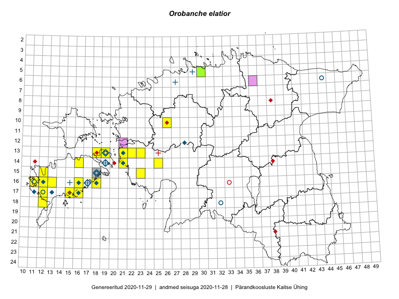

Orobanche elatior
Uuendatud: 2016-12-08
Kaardile koondatud taksonid: Orobanche elatior Sutton

Kaart põhineb 35 vaatlusel. Taime on leitud 16 ruudust.
| Ruut | Vaatleja(d) | Vaatlusaeg | Kirje tüüp | Viide andmebaasikirjele |
|---|---|---|---|---|
| 16-18 | Meeli Mesipuu, Kadri Tali | 2015-07-06 | ruut/ala | vaata PlutoFis |
| 15-23 | Maret Gerz, Leena Gerz | 2015-08-15 | ruut/ala | vaata PlutoFis |
| 15-23 | Maret Gerz, Leena Gerz | 2015-08-15 | punkt | vaata PlutoFis |
| 17-12 | Mari Reitalu | 2014-09-02 | ruut/ala | vaata PlutoFis |
| 17-12 | Mari Reitalu | 2014-09-02 | punkt | vaata PlutoFis |
| 13-22 | Kirsi Loide, Marje Loide | 2015-08-10 | ruut/ala | vaata PlutoFis |
| 16-16 | Sirje Azarov, Aira Alasi | 2015-07-28 | ruut/ala | vaata PlutoFis |
| 16-16 | Sirje Azarov, Aira Alasi | 2015-07-28 | punkt | vaata PlutoFis |
| 17-16 | Sirje Azarov, Aira Alasi | 2015-08-17 | ruut/ala | vaata PlutoFis |
| 13-22 | Kirsi Loide, Marje Loide | 2015-08-12T15:03Z | punkt | vaata PlutoFis |
| 13-22 | Kirsi Loide, Marje Loide | 2015-08-13T13:09Z | punkt | vaata PlutoFis |
| 13-22 | Kirsi Loide, Marje Loide | 2015-08-13T13:10Z | punkt | vaata PlutoFis |
| 13-22 | Kirsi Loide, Marje Loide | 2015-08-13T13:10Z | punkt | vaata PlutoFis |
| 17-16 | Sirje Azarov, Aira Alasi | 2015-08-17 | punkt | vaata PlutoFis |
| 13-21 | Kersti Püssa, Rein Kalamees | 2015-07-24 | ruut/ala | vaata PlutoFis |
| 13-19 | Kadri Tali | 2015-06-03 | ruut/ala | vaata PlutoFis |
| 10-26 | Jaak-Albert Metsoja, Ott Luuk, Maret Gerz | 2014-06-11 | ruut/ala | vaata PlutoFis |
| 14-25 | Toomas Kukk, Oliver Parrest | 2016-07-08 | ruut/ala | vaata PlutoFis |
| 13-23 | Thea Kull, Eerik Leibak | 2016-07-05 | punkt | vaata PlutoFis |
| 13-23 | Thea Kull, Eerik Leibak | 2016-07-05 | ruut/ala | vaata PlutoFis |
| 14-21 | Mari Reitalu, Oliver Parrest | 2016-07-04 | ruut/ala | vaata PlutoFis |
| 17-15 | Toomas Kukk, Meeli Mesipuu, Johannes Kõdar | 2016-08-11 | punkt | vaata PlutoFis |
| 14-25 | Toomas Kukk, Oliver Parrest | 2016-07-08 | punkt | vaata PlutoFis |
| 16-18 | Sirje Azarov, Mari Reitalu | 2016-08-10 | punkt | vaata PlutoFis |
| 16-18 | Mari Reitalu, Sirje Azarov | 2016-08-08 | ruut/ala | vaata PlutoFis |
| 14-21 | Mari Reitalu, Oliver Parrest | 2016-07-04 | punkt | vaata PlutoFis |
| 13-18 | Mari Reitalu, Triin Reitalu | 2016-08-15 | punkt | vaata PlutoFis |
| 13-21 | Kersti Püssa, Rein Kalamees | 2015-07-24 | punkt | vaata PlutoFis |
| 16-12 | Mari Reitalu, Triin Reitalu | 2016-07-01 | punkt | vaata PlutoFis |
| 15-12 | Toomas Kukk, Meeli Mesipuu | 2016-10-08 | ruut/ala | vaata PlutoFis |
| 15-12 | Toomas Kukk, Meeli Mesipuu | 2016-10-08 | punkt | vaata PlutoFis |
| 15-12 | Toomas Kukk, Meeli Mesipuu | 2016-10-08 | punkt | vaata PlutoFis |
| 17-15 | Meeli Mesipuu, Toomas Kukk, Johannes Kõdar | 2016-08-11 | ruut/ala | vaata PlutoFis |
| 15-12 | Meeli Mesipuu, Toomas Kukk | 2016-10-18 | punkt | vaata PlutoFis |
| 15-12 | Meeli Mesipuu, Toomas Kukk | 2016-10-18 | punkt | vaata PlutoFis |